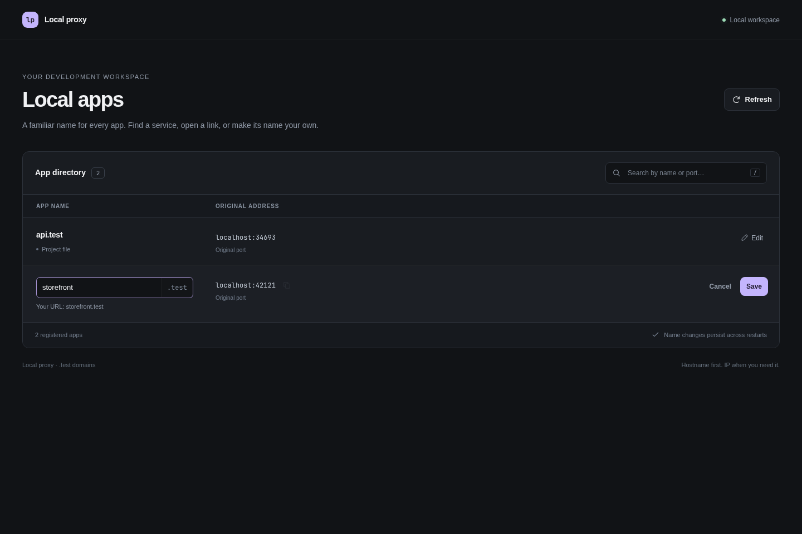
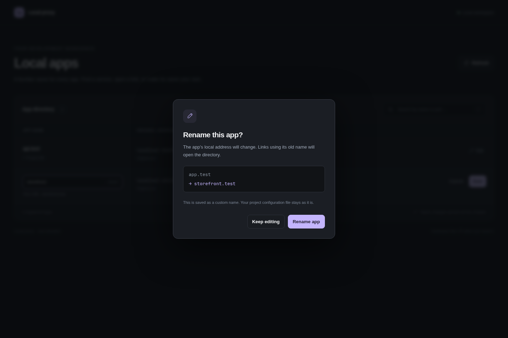
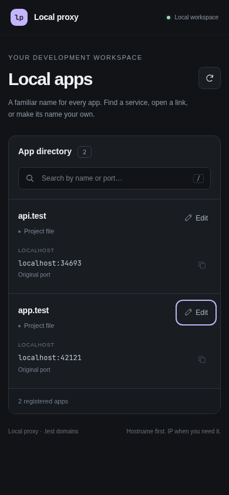

Every app, in one place.
Discover HTTP services, find their addresses, and edit names in the browser.
Find listening HTTP apps
./bin/localproxy discover
./bin/localproxy list
./bin/localproxy rename curious-otter studioThe last command is illustrative: replace curious-otter with a name from your actual listing. Discovery inspects TCP listeners with ss and probes IPv4 localhost with HTTP HEAD. Any valid HTTP response qualifies, including 401, 404, or a redirect. Redirects are not followed.
It skips ports below 1024, its proxy/admin/editor ports, and already registered or suppressed ports. Probes use a two-second timeout and up to eight concurrent requests. HTTPS-only and IPv6-only upstreams are not discovered. This is a manual scan; stopped apps are not automatically removed.
Enable the editor
Set directory_address in the registry to 127.0.0.1:18083, then start the backend in a separate terminal:
./bin/localproxy -config /absolute/path/routes.json ui \
--listen 127.0.0.1:18083Reload a running proxy with the same registry, or start it:
./bin/localproxy -config /absolute/path/routes.json reload
# If Caddy is stopped, use start instead of reload.The UI process must remain running. Without directory_address, generated Caddy pages provide a static directory with no edit controls. The editor itself accepts loopback listeners only.
Edit, confirm, undo
Watch the recorded workflow, including a real rename and Undo.
- Search by name or port. Press / to focus search.
- Choose Edit and enter the new name.
- Choose Save or press Enter to review the old and new domains.
- Confirm Rename app. Use Undo in the success message if needed.
Escape cancels an edit. Invalid, duplicate, and reserved names are rejected. A revision token prevents stale browser edits from overwriting a newer change. If a conflict occurs, refresh and try again.
{kind=link}

{kind=link}

A successful browser rename applies Caddy routes before reporting success and persists the override. The UI attempts rollback if later file persistence fails. Ambiguous network failures and rollback failures still need operator attention; this is not a multi-system transaction guarantee.
What the fallback means
Registered app requests go to their original localhost ports. Their own 404 responses remain 404s. A registered app that stops returns an upstream error; the directory is a list of registrations, not a health monitor.
Unregistered names under the configured suffix and the reserved home name open the directory, including deep paths. In editable mode, the Host check allows localhost, configured single-label local names, and this machine’s known Tailscale addresses. An unrelated hostname receives 403. The static fallback has no equivalent Host check.
DNS must first send the request to this proxy. A fallback cannot intercept arbitrary domains on the Internet. HTTPS also needs a certificate the client accepts for the requested hostname.
On a smaller screen
{kind=link}

A custom Caddy instance
./bin/localproxy -config /absolute/path/routes.json ui \
--listen 127.0.0.1:18083 \
--proxy-admin 127.0.0.1:2022 \
--proxy-config /absolute/path/instance/caddy.jsonUse this when the running Caddy instance has a different admin endpoint or config path. UI edits preserve custom listeners and a separate directory server. Ordinary CLI reloads regenerate the standard servers; do not assume they preserve hand-edited Caddy configuration.